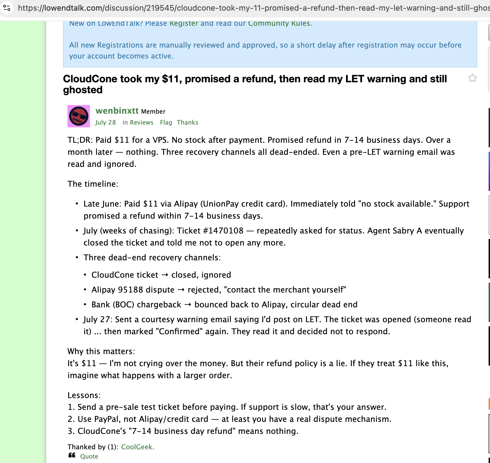
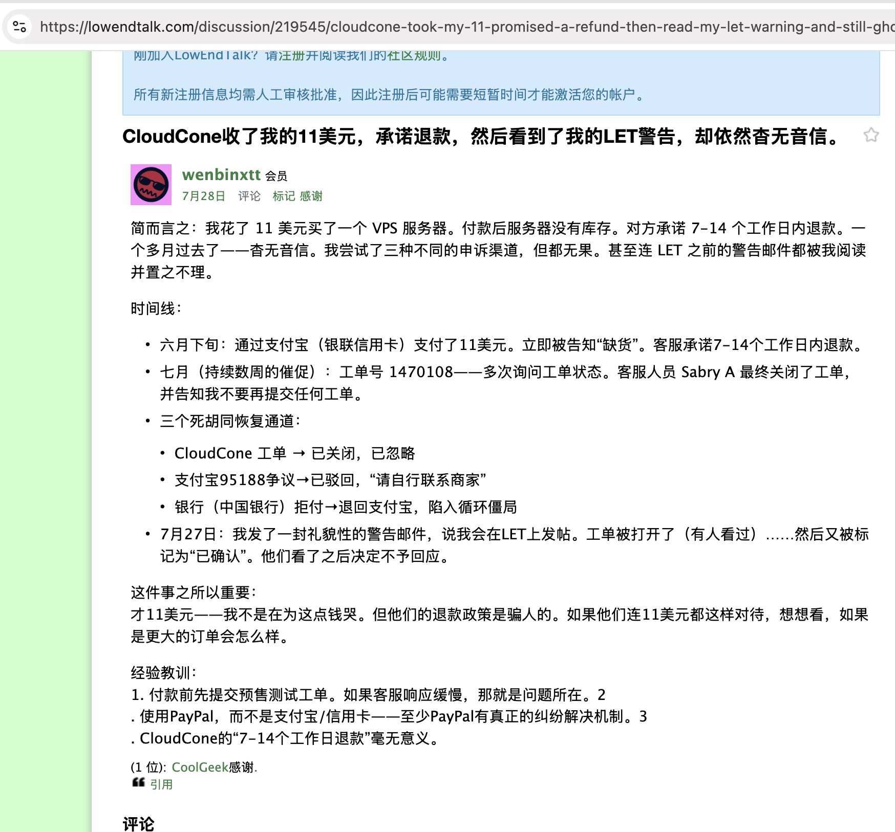
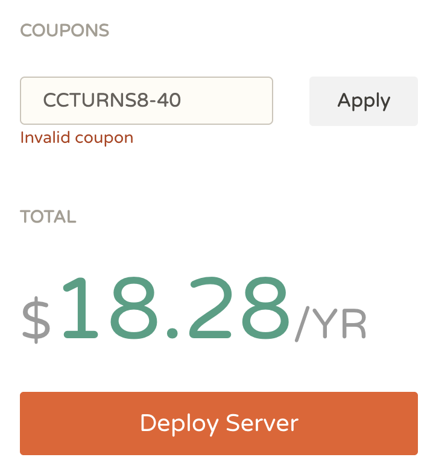
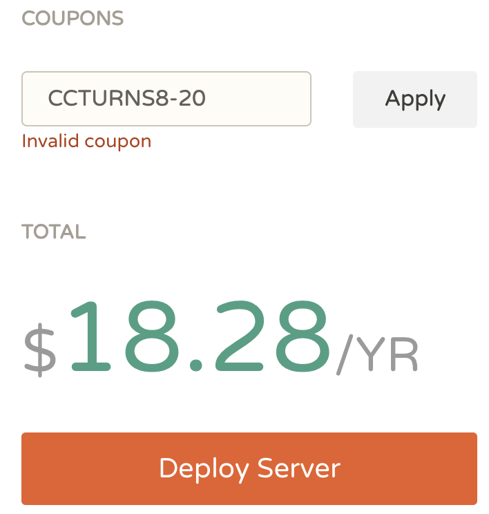

CloudCone 深度评测：SC2 常规线、按小时计费与节日促销机怎么选
CloudCone 其实有两条几乎不相干的产品线：按小时计费的 SC2 常规云服务器，和按年付甩卖的节日促销机。本文拆解两者在功能、支持级别与计费口径上的差异，整理 12 档可下单套餐、洛杉矶 Multacom 的官方测速 IP 与下载测速文件，说明支付宝/PayPal 充值与 2025 年新政后的退款边界，并逐条标注优惠码的核实状态，帮你判断自己该买哪条线。
重要声明与免责提示：
本文内容及测评数据均来源于网络（由玩家及社区公开分享，参考来源包括 NodeSeek 社区实测讨论 与 LowEndTalk 社区用户反馈）。鉴于各机房跨境路由、突发带宽以及商家策略随时变动，本文信息可能已经过时，请以各商家的实时线路和性能为准。
下单前请先看清这四件事：
1. 7 天无理由退款已经取消。官方自 2025-06-07 起调整政策，新购、续费、升级、附加组件等服务款项默认不可退，只有账户里的 Available Balance 可以申请退回；部署后 7 天内若出现经官方核实属于商家侧的技术故障，退款形式是 cloud credits（云余额），不是现金，也不原路退回。
2. 余额是单向的。充进账户的钱只能在站内消费，能不能退回、退到哪，取决于你当初使用的支付渠道和渠道允许的时限，别把大额资金长期放在账户里。
3. 不要手滑点 Destroy。SC2 销毁后按已用小时结算，剩余部分转为账户余额；年付促销机销毁则通常什么都不退。操作前请确认自己点的是关机还是销毁。
4. 官方 TOS 明确不保证数据。条款原文写明不担保服务不中断、也不担保你的数据备份；无论买哪条线，异地备份都必须自己负责。
CloudCone 在中文圈的名声有点分裂：一边是「十美元一年、常年有货」的性价比标签，一边是「工单慢、不退款、别放生产」的劝退警告。这两种说法其实都没错，只是它们说的是两条不同的产品线。
2021 年 10 月 12 日，CloudCone 上线了全新的 VPS 产品线，主打通用的低价、固定月付/年付、可终身续费同价；而 SC2（Scalable Cloud Compute）是它原本的高端云服务器线，纯 SSD、自动备份、快照、云防火墙、按小时计费、带托管支持。后来大家在黑色星期五、圣诞节、双十一抢的那些「$9.99/年」机器，绝大多数属于 VPS 促销线，而不是 SC2。
这个区别不是文字游戏。它直接决定了你买到的东西有没有自动备份、工单优先级如何、能不能按小时销毁、以及出问题时对方愿不愿意管。本文的主线就是把这层关系讲清楚。至于 15 美元以内那些具体机型的逐条盘点，站内已有《CloudCone 15 美元以内套餐与高性价比 VPS 推荐》，这里不再重复，只在需要对照时引用结论。
文中所有购买链接均为站内跳转，点击后在新标签页打开。
一、SC2 与节日促销机：两条几乎不相干的产品线
先把官方口径摆出来。CloudCone 自己在对比文章里给两条线打了星：网络与在线率都是五星，性能都是五星，功能 SC2 五星、VPS 三星；价格 SC2 四星、VPS 五星；支持 SC2 五星、VPS 三星。这张星级表基本就是整篇文章的提纲。
SC2 的独有功能包括：自动备份（Automated Backups）、快照（Snapshots）、云防火墙（Managed Firewall）、Cloud View 监控面板、一键应用（one-click applications），以及纯 SSD 存储。VPS 线则是 SSD Cached 存储（用 SSD 做缓存加速，不是全闪），支持在部署时按单项资源加购，价格固定且可终身续费，节日折扣力度大。
支持级别的差别更值得注意。官方写得很直白：SC2 是 24/7 fully managed support，涵盖 cPanel 迁移、负载问题、软件包安装、DNS 配置、防火墙配置与排障；VPS 线是 semi-managed，主要协助网络问题、启动失败和系统升级。换句话说，买年付促销机的人，拿到的是「半托管」，很多系统层面的活要自己干。
| 对比维度 | SC2 常规线 | 节日促销 VPS 线 |
|---|---|---|
| 存储类型 | 纯 SSD | SSD / SSD Cached / HDD 混合 |
| 备份与快照 | 自动备份、快照为产品功能 | 一般不包含，需自行处理 |
| 附加功能 | 云防火墙、Cloud View、一键应用 | 以基础 VPS 能力为主 |
| 计费方式 | 按小时计费、按月出账 | 固定月付或年付，一次性扣款 |
| 官方支持级别 | 24/7 fully managed | semi-managed |
| 价格定位 | 溢价，按用量付费 | 极低价，节日放量 |
需要泼一盆冷水的是：官方写的「fully managed」和中文用户理解的企业级托管并不是一回事。LowEndTalk 上有用户反馈，其 SC2 实例在一次基础设施迁移后连续多日不稳定、重装卡住超过一周，沟通中收到的多为模板化回复；该用户还提到，SC2 的自动备份功能曾因稳定性问题被官方临时关闭。这是单一用户的公开陈述，本站无法独立核实全部细节，但它至少说明：SC2 的支持优先级高于促销线，不等于有 SLA 兜底的救火队。
💡 一句话判断：如果你需要的是「有人帮我装环境、迁站、看负载」，SC2 是 CloudCone 家唯一沾边的选项；如果你只是要一台便宜机器自己折腾，促销线的性价比高一个数量级，但别用 SC2 的服务预期去要求它。
二、套餐矩阵：小时价、月付价与年付价不能混着看
下面这张表把三条计费口径放在一起，方便对照。请注意第二列，这一列比价格更重要——它决定了你后续怎么续费、能不能随时删机。
| 套餐 | 计费方式 | 配置（CPU/内存/硬盘） | 流量 / 端口 | 机房 | 适合场景 | 下单 |
|---|---|---|---|---|---|---|
| SC2 小时计费款 | $0.00699 / 小时 | 1C / 1GB / 20GB SSD | 3TB @ 1 Gbps | 洛杉矶 Multacom | 短测、编译、临时环境 | 查看 |
| Sep-24-SC2-1 | $4.98 / 月 | 2C / 2GB / 45GB SSD | 3TB @ 1 Gb/s | 洛杉矶 | 长期小站、容器宿主 | 查看 |
| Sep-24-SC2-2 | $9.98 / 月 | 4C / 4GB / 90GB SSD | 4TB @ 1 Gb/s | 洛杉矶 | 多站点、中型应用 | 查看 |
| Xmas-CS-VPS-23-1 | $9.5 / 年 | 1C / 512MB / 30GB | 3TB @ 1 Gb/s | 洛杉矶 | 极限低价练手 | 查看 |
| 2026 新年限量款 | $9.99 / 年 | 1C / 1GB / 50GB SSD | 1TB @ 1 Gbps | 洛杉矶 Multacom | 轻量建站、探针 | 查看 |
| 2026 新年 3TB 款 | $10.24 / 年 | 1C / 1GB / 50GB SSD | 3TB @ 1 Gbps | 洛杉矶 Multacom | 流量稍大的小站 | 查看 |
| CS-Q4-25-VPS-1 | $10.49 / 年 | 1C / 1GB / 50GB SSD | 1TB @ 1 Gb/s | 洛杉矶 | 备份节点、轻应用 | 查看 |
| 2025 黑五双核款 | $10.59 / 年 | 2C / 1GB / 20GB SSD | 3TB @ 1 Gbps | 洛杉矶 Multacom | 多任务脚本机 | 查看 |
| 八周年限量款 | $13.2 / 年 | 1C / 1GB / 27GB SSD | 3TB @ 1 Gbps | 洛杉矶 Multacom | 综合均衡 | 查看 |
| 2025 圣诞双核款 | $13.59 / 年 | 2C / 1GB / 24GB SSD | 3.5TB @ 1 Gbps | 洛杉矶 Multacom | 双核 + 大流量 | 查看 |
| SSD-VPS-STL-1 | $12.99 / 年 | 1C / 1GB / 14GB SSD | 1TB @ 1 Gb/s | 圣路易斯 | 美国中部业务 | 查看 |
| CS-Q1-25-VPS-1 | $14 / 年 | 2C / 1GB / 60GB | 2TB @ 1 Gb/s | 洛杉矶 | 需要大硬盘的轻应用 | 查看 |
💡 关于第一行的小时价：
$0.00699/小时是小时单价，不是年付价，也不是月付价，写表格时最容易在这里出错。它和表格里 $4.98/月、$9.98/月 的 SC2 月付款不是同一计费口径——后者是历史促销的固定月费，前者按实际开机小时累计。两者不能直接乘除换算成「谁更便宜」，因为可用时长、配置和计费规则都不同。
还有一点容易忽略：同样是 1GB 内存、50GB 硬盘，$9.99/年 和 $10.24/年 的差别主要在月流量（1TB 对 3TB），而 $10.59/年 那档牺牲硬盘换到双核。选购时先确定自己卡在哪一项资源上，再比价格，否则很容易为了省一美元买到不匹配的配置。
三、按小时计费、按月出账：预付余额制到底怎么转
CloudCone 全站是预付余额制（Cloud Credits）。你不能在结账页直接刷卡付款了事，而是先往账户里充值，再用余额下单。这个设计对年付用户影响不大，但对 SC2 用户是核心体验。
官方帮助中心对 SC2 计费有一段很清楚的说明，值得逐句读：
- 按小时计费、按月出账。每月 1 号出上个月的账单，按实例当月实际运行的小时数计费。
- 部署前必须预充值，金额要能覆盖该套餐的月度估算账单，否则无法开通。
- 销毁实例时，按已使用小时数扣费，剩余部分转为账户可用余额，用于抵扣后续账单。
- 余额可以申请退回，但必须在支付渠道允许的退款时限内。
这套机制的实际含义是：SC2 更像「云主机」而不是「VPS」。你可以开一台机器跑两小时压测，然后销毁，只为这两小时付费；也可以临时升配扛一波流量，事后再降回来。对于迁移、编译、短周期项目验证这类场景，按小时计费确实比年付合理得多。
但它也有两个坑。
第一，预充值金额是按月估算的。也就是说，即使你只打算用三天，开通时也得先充够一个月的估算额度。这笔钱不会消失，会留在余额里，但它事实上提高了试错门槛——你至少要愿意把一个月机器钱押在账户里。
第二，余额不等于现金。官方 2025 年的新政把「服务款」和「账户余额」拆开了：服务款默认不可退，只有 Available Balance 可以申请退款。而余额能不能退、退到哪里，还要看支付渠道。用支付宝充的值，就受支付宝侧的规则约束；这也是为什么后文会建议，如果你在意争议渠道，优先考虑 PayPal。
和年付促销机对比，这个差异更明显。年付机是一次性扣掉全年费用，机器开通后基本没有回头路；SC2 是持续计费，你随时可以停。前者适合「确定要长期放一台小机器」，后者适合「不确定要跑多久」。不要因为年付单价看起来更低，就把一个只跑两周的需求买成一年。
四、支付方式与退款：支付宝可以，微信不行，无理由退款已成历史
支付方式是中文用户最关心的一节，也是最容易被二手文章带偏的一节。这里按官方一手来源逐项说明，状态不做美化。
| 支付方式 | 状态 | 说明 |
|---|---|---|
| 支付宝 | ✅ | 官方帮助中心把 AliPay 列为四种充值方式之一；官方公告说明在 Billing → Add Funds 选择 AliPay 后会跳转支付宝完成交易 |
| PayPal | ✅ | 官方四种充值方式之一，同样用于给余额充值，不是直接购买套餐 |
| 信用卡 / 借记卡 | ✅ | 官方列 Card on file（需先绑卡）；FAQ 原文为支持所有主流信用卡与借记卡 |
| 微信支付 | ❌ | 官方充值方式清单与 FAQ 均为封闭枚举，未包含微信支付；部分中文文章称支持，与官方清单冲突，以官方为准 |
| 加密货币 | ❌ | 官方四种方式与 FAQ 均未列入；但有第三方测评称支持，来源互相矛盾，建议下单前自行到结账页确认 |
| 银联 / 云闪付 | 未知 | 官方清单未提及，也未明文排除，需人工核实 |
| Apple Pay | 未知 | 同上，官方未提及也未排除 |
| Google Pay | 未知 | 同上 |
| 银行电汇 | 未知 | 官方充值方式未含电汇；TOS 仅写明以美元结算、预付费用不退 |
这里有个细节值得单独说：官方帮助中心列的四种充值方式是「PayPal、AliPay、Card on file、Promotional Codes」。其中 Promotional Codes 指的是充值码/代金码，和结算时输入的折扣码不是一回事。很多文章把这两个概念混在一起，导致读者以为某个折扣码能在充值环节抵现。
退款政策必须单独强调，因为它是 2025 年之后变化最大的一块。官方公告写明，自 2025-06-07 起调整 7 天退款保证政策，新购、续费、升级、附加组件等服务款项默认不可退，只有账户 Available Balance 可申请退款；官方给出的理由是减少系统内的欺诈与滥用。帮助中心另一篇文章进一步说明：VPS 与促销套餐付款一律不可退、也不可更换套餐；部署后 7 天内如出现经官方核实属于商家侧的技术故障，退款以 cloud credits 形式发放。
还有一个必须提醒的矛盾点：官网的 China Optimized VPS 产品页至今仍挂着「7 Day money back guarantee / No questions asked」的旧文案。旧页面文案与 2025 年新政冲突，请以公告和帮助中心为准，不要拿产品页截图去和客服争论——条款层面你大概率赢不了。
第三方平台上能看到更具体的后果。LowEndTalk 有一位用户记录：用支付宝（绑定银联信用卡）支付 11 美元购买 VPS，付款后被告知无库存，客服承诺 7 至 14 个工作日退款，一个多月仍未到账，工单被关闭；其后续尝试支付宝投诉与银行拒付均未走通。该用户给出的建议是「付款前先发一张售前工单试探响应速度」以及「优先用 PayPal，至少保留争议渠道」。
数据来源：LowEndTalk（https://lowendtalk.com/discussion/219545/cloudcone-took-my-11-promised-a-refund-then-read-my-let-warning-and-still-ghosted），采集于 2026-11-07。


这是一起单一纠纷，不代表所有订单都会如此，但它和官方「默认不可退」的条款方向一致。结论很简单：把在 CloudCone 花的钱当成不可逆支出，金额控制在「丢了不心疼」的范围内。
不过这里必须补一条反向风险。官方 TOS 第 15 节写明：一旦威胁或实际发起支付争议（dispute / chargeback），CloudCone 会停止一切沟通、永久停用账户下所有服务，已付费用全部没收，并追加最低 75 美元、最高 250 美元的管理费。也就是说，PayPal 争议是最后手段，不是日常维权工具；如果你账户里还有别的机器，动用之前先想清楚连带损失。
TOS 第 12 节还单独写了备份义务：客户同意自行维护所托管内容的当前副本，不管商家是否提供备份服务。这条和前面的免责声明是一套的——备份责任在用户，不在商家。
数据来源：CloudCone 官方 TOS（https://cloudcone.com?p=16/），采集于 2026-11-07。
关于 KYC 与实名要求，本次检索未找到官方一手政策，官方也未公开说明，建议注册前自行到注册页与结账页确认，不要轻信二手说法。
五、官方测速 IP、Looking Glass 与第三方实测
买之前先用官方节点测一遍，比看任何评测都可靠。CloudCone 提供公开的 Looking Glass 与测速文件：
- Looking Glass 总入口：https://lg-la.us.cloudc.one/
- 洛杉矶（Multacom 线）IPv4：
148.135.114.94 - 洛杉矶测速文件：100MB、1000MB、5000MB
- 圣路易斯（密苏里）IPv4：
66.154.118.2，Looking Glass：https://lg-stl.us.cloudc.one/
线路背景：洛杉矶走 Multacom（AS35916），国际 BGP，上游包含中国联通 AS4837、中国电信 163/AS4134，以及 GTT、PCCW、Cogent、Arelion 等。历史上有联通方向走 4837 的记录，但商家不承诺长期优化，产品定位也不属于 CN2 GIA、9929 这类高端回国线路。圣路易斯节点对应 AS7393（Cybercon），属于美国中部普通国际 BGP，对国内访问没有优化。
第三方实测能给一些量级参考。有测评站对一台 2 核 2G 的 SC2 实例做过记录：CPU 为 Intel Xeon E312xx、2700 MHz，磁盘平均读写约 72.2 MB/s，UnixBench 得分 1042.5，三网回程为电信 163、联通 4837、移动 CMI；本地下载在下午 15:00 测得 37.6 MB/s，晚高峰 21:50 降到约 1605 KB/s；丢包率最高 14%。
数据来源：VPSTOP（https://www.vpstop.cn/zhujiceping/2025-11/1189.html），采集于 2026-11-07。
另一家测评站对一台 1 核 512MB 的 SC2 实例记录到：国内 ping 约 188ms，三网往返基本直连、经过节点不多，但线路本身一般导致延迟偏高；电信下载偏弱，联通上传表现较好，移动下载可过百兆。该页还提到，Multacom 机房的 IP 早已被流媒体平台判定为机房 IP，解锁能力有限。
数据来源：国外 VPS 测评（https://www.guzheyun.com/2189.html），采集于 2026-11-07。
这两组数据的共同指向很清楚：CloudCone 的洛杉矶不是「快」，而是「直」。路由不绕，节点少，延迟对美国西海岸来说属于正常水平；但带宽质量受晚高峰国际出口拥堵影响明显，从 37.6 MB/s 掉到 1.6 MB/s 这种量级变化，才是真实体验里最难受的部分。它适合建站、跑 API、做后端，不适合对国内访问速度敏感的业务，也不适合拿来当长期大流量中转。
💡 测速的正确姿势：不要只 ping 一次。用
ping看延迟与丢包，用curl -o /dev/null -w "%{speed_download}"拉 100MB 文件看实际速率，用mtr看路由在哪一跳开始劣化；时间点选工作日下午、晚 21:00 至 23:00、周末各测一次。Looking Glass 只能反映机房到骨干的单点情况，替代不了你本地运营商到机房的全链路测试。
第三方实测受时间、机房、运营商与库存影响，本站未复现；套餐与网络条件以商家实际业务为准。
六、优惠码：五条有来源记录，但没有一条由本站实测
CloudCone 的优惠码生态比较混乱：节日码、周年码、渠道码混在一起，大量历史码早已失效却仍在中文站流传。这里只列有来源记录、且可信度不是 low 的五条，并注明记录核实时间。
| 优惠码 | 折扣 | 周期属性 | 到期 | 记录核实 | 来源 |
|---|---|---|---|---|---|
11-11DAY5OFF | 额外 5% off，限时 24 小时 | one-time | 2025-11-12 | 2026-08-17 / high | vpszhijia.com |
CCTURNS8-40 | 低配机型 6 折（40% off） | recurring | — | 2026-08-17 / high | hostcsr.com |
CCTURNS8-20 | 高配机型 8 折（20% off） | recurring | — | 2026-08-17 / high | bestcheapvps.org |
EASTERSAVER | 额外 8 折（20% off） | 未知 | — | 2026-08-17 / medium | appinn.com |
6BDAY | 约 85 折（15% off） | 未知 | 2023-12-31 | 2026-08-17 / high | nodeqa.com |
必须先说清楚三件事。
第一，以上全部是来源记录，不是本站实测结果。本站没有在结算页逐一输入验证，因此不能告诉你它们今天是否仍然生效。6BDAY 的到期日写的是 2023-12-31，基本可以视为历史码；11-11DAY5OFF 是限时 24 小时的一次性码，早已过期。真正还有讨论价值的只有两条周年码 CCTURNS8-40 与 CCTURNS8-20，以及语义上按节日投放的 EASTERSAVER。
第二，折扣码是否与当前在售套餐叠加，未知。周年码通常限定特定机型或特定活动页，而前面列出的这些套餐很多是节日限量款，本身已经是折后价。结算页输入后如果不生效，页面通常会提示无效或价格不变，这时就按原价买，不要为了凑码去换一个自己不需要的配置。
第三，不要把「折扣码」和「充值码」混淆。前面提过，官方把 Promotional Codes 列为四种充值方式之一，那类码是往账户里加钱的，和结算时减价的 coupon 是两套东西。看到「Promo Code」字样时，先确认它出现在 Add Funds 页面还是 Checkout 页面。
另有 17 条记录属于低可信或无来源的历史种子（包括重复出现的 CCLAUNCH15 等），本文不列为可用码。任何声称「已经亲自验证通过」的说法，如果没有当天的结算截图，都不足以采信。


CloudCone 目前常规情况下不提供通用的通用折扣优惠券或叠加优惠码，其低价主要通过限时特价促销活动、闪购和直降套餐来实现
七、优缺点、售后口碑与数据安全
优点：便宜是真的，功能也是真的
- 价格门槛低到几乎没有决策成本。年付 $9.5 起，SC2 小时计费按用量走，试错成本可控。
- 有货率高。不像部分商家靠限量抢购制造稀缺，CloudCone 的节日款通常能直接下单。
- SC2 的功能栈完整。自动备份、快照、云防火墙、Cloud View 监控这些在同价位并不常见，尤其是快照和防火墙，对建站用户很实用。
- 销毁即止损。SC2 按小时结算，剩余转余额，这一点比年付机友好得多。
- 支付宝直充。对没有双币信用卡的用户，这是实打实的便利。
缺点：便宜是有代价的
- 售后是最大不确定性。工单排队、模板回复、非工作时间响应慢，是长期存在的抱怨；SC2 的托管支持优先级更高，但也不等于随时有人救火。
- 退款几乎没有余地。政策层面已经写明默认不可退，余额退回还受支付渠道限制。
- 硬件平台偏老。第三方实测中出现 Xeon E312xx 这类较老的平台，磁盘读写 72.2 MB/s 属于一般水平；对 IO 敏感的应用要有心理准备。
- 线路没有优化。国际 BGP，晚高峰掉速明显，不能拿它和 CN2 GIA 产品比国内体验。
- 邻居影响真实存在。低价机型容易聚集跑满带宽的用户，母机资源争抢会直接反映在你的延迟和 IO 上。
数据安全：这是最不能省的一节
官方 TOS 原文写明不保证服务不中断、不保证数据备份，责任上限也不超过三个月服务费。LowEndTalk 上还有用户称，其在 SC2 上的数据在一次基础设施迁移中丢失，随后购买 SC2 正是看中自动备份，结果自动备份功能又被官方以稳定性为由关闭——这段陈述同样属于单一用户说法，但它和 TOS 的免责方向是一致的。
所以无论你买的是 SC2 还是年付促销机，请把下面几条当成硬性操作规范：
- 不要存放唯一副本。数据库、照片、代码仓库必须有本地或第三地备份。
- 开启自动备份不等于安全。备份和机器在同一家、同一机房，商家侧事故时可能一起没。
- 每周至少一次异地拉取。用 rsync、restic 或对象存储同步到另一家服务商。
- 不要把「快照」当备份。快照依赖底层存储，误删实例时快照未必能救你。
- 生产库、支付、邮件主节点不要放这里。这不是能力问题，是责任边界问题。
谁不适合买
- 需要正规发票、中文客服、明确 SLA 赔付的企业用户；
- 把国内访问速度当核心指标的内容站；
- 需要高 IOPS 的数据库或高并发写入业务；
- 无法接受「钱付出去就可能回不来」的用户；
- 没有备份习惯、把服务器当唯一存储的人。
决策清单：按需求对号入座
买之前，按顺序回答下面六个问题，答案会直接把你推到某一条产品线。
- 这台机器要跑多久？ 两周以内的测试、编译、迁移，选 SC2 小时计费款，用完销毁，只付小时钱。
- 需要自动备份、快照、云防火墙吗？ 需要就只能在 SC2 线里选，比如 2 核 2G / 45G · $4.98/月 或 4 核 4G / 90G · $9.98/月；不需要就别为这些功能付溢价。
- 预算是否严格控制在 15 美元/年以内？ 是的话直接看站内 15 美元以内盘点，本文不重复推荐；如果只想要一个入口，2026 新年 1G/50G · $9.99/年 是最低门槛的选择。
- 更在意流量还是硬盘？ 流量优先看 3TB 版 · $10.24/年，硬盘优先看 2 核 / 60G · $14/年。
- 是否需要美国中部节点？ 需要就看 圣路易斯 1G/14G · $12.99/年，但要做好国内访问更慢的准备。
- 能否接受钱付出去不退？ 不能接受就改用 PayPal 充值、只买最短周期，或者干脆换一家支持无理由退款的商家。
最后给一个总判断：CloudCone 的 SC2 线适合「要功能、要弹性、能自己兜底」的人；促销线适合「要便宜、能折腾、不怕折腾」的人。 两条线都不是生产级方案，把它们放在测试、学习、轻量建站、临时中转的位置上，体验会好很多；一旦抬到核心业务的高度，售后和数据安全这两块短板就会立刻放大。
心态放平，把它当成一台按小时或按年租来的实验机，你会觉得这笔钱花得挺值。
附录：NodeSeek 与 LowEndTalk 社区玩家实测数据汇总
根据 NodeSeek 社区玩家实测 与 LowEndTalk 长期评测 整理的 CloudCone 洛杉矶 Multacom 机房典型跑分与网络特征：
----------------------------------------------------------------------
CPU Model : Intel(R) Xeon(R) CPU E5-2680 v4 / E3-12xx
CPU Cores : 1 ~ 2 vCPU
CPU Frequency : ~2399.996 MHz
Total Disk : 30 GB ~ 60 GB (SSD Cached / 纯 SSD 视套餐而定)
----------------------------------------------------------------------
fio Disk Speed Tests:
4k Read : ~25 - 45 MB/s
Sequential Read : ~280 - 450 MB/s
Geekbench 5 Benchmark:
Single Core : ~520 - 640
Multi Core : ~1050 - 1280
----------------------------------------------------------------------关键网络与运营特征：
- 机房上游与自治系统：洛杉矶 Multacom 机房（AS35908），三网普通国际 BGP 直连，无电信 CN2 GIA 等高端回国优化。白天三网丢包率 < 2%，晚高峰拥堵时丢包率上升至 8% ~ 18%。
- 更换 IP 规则：如开机 IP 遭遇阻断，开机 24 小时内提工单可申请免费更换一次；日常付费换 IP 费用为每次 $2.00。
- 权威引证：官方知识库 CloudCone Documentation 及 NodeSeek 社区实测原帖。